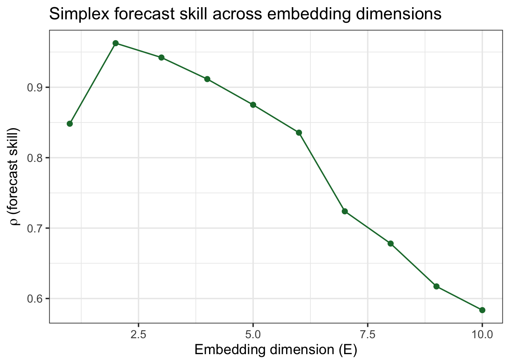
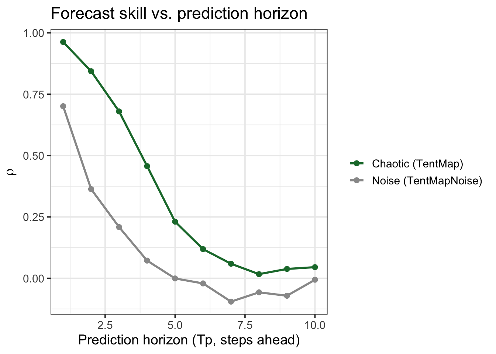
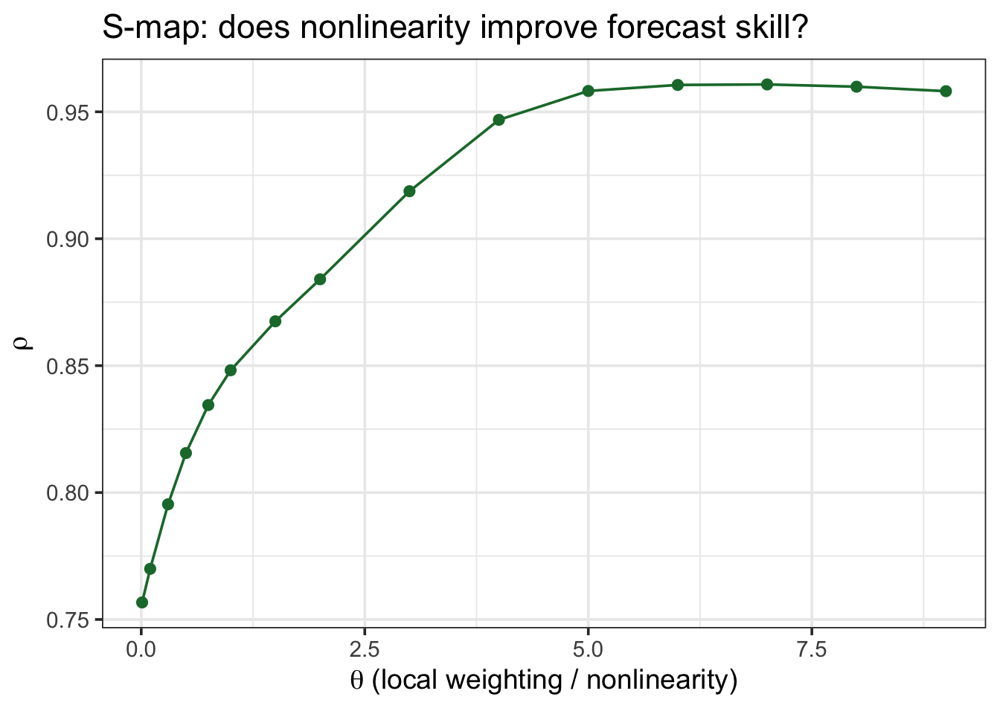
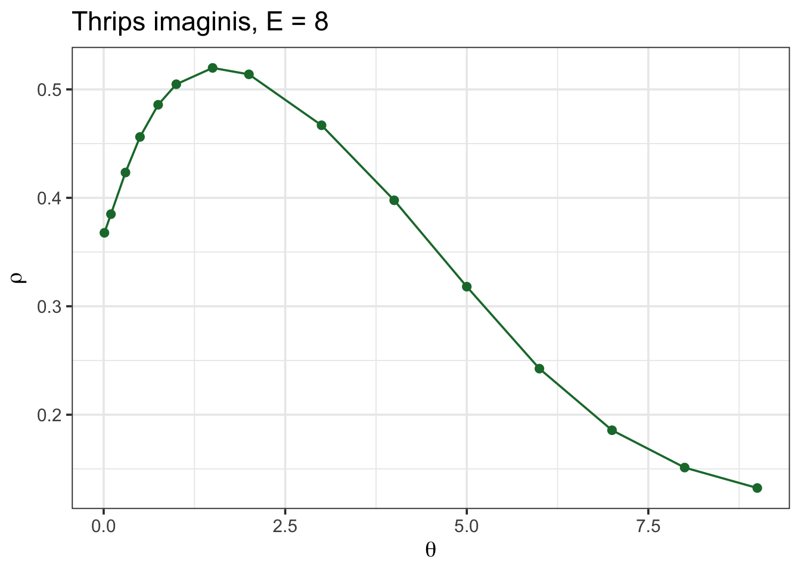
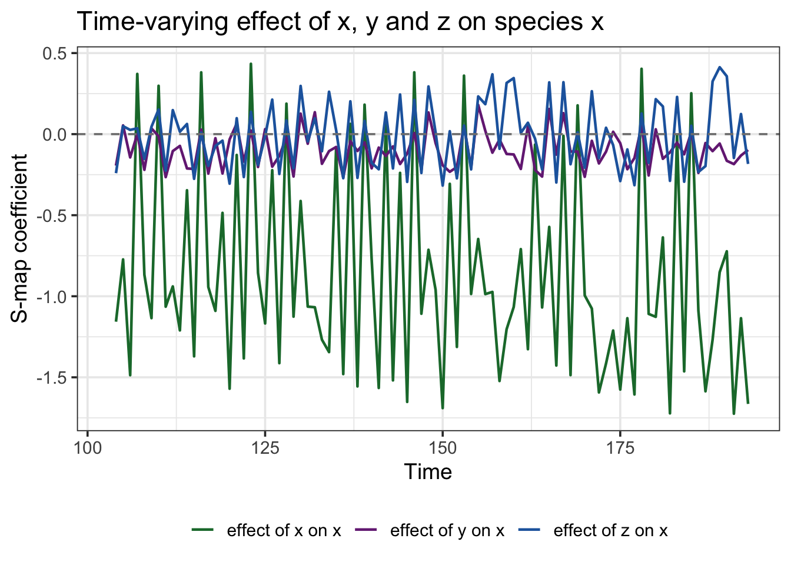

Empirical Dynamic Modelling: an introduction
Why not just fit a regression?
You’ve got a population time series and you want to know what drives it. The reflex move is a regression, or maybe an ARIMA model. Here’s the problem with that:
- Regression assumes a fixed relationship: a 1-unit change in \(X\) always buys you the same change in \(Y\).
- Ecological systems are usually state-dependent: the effect of a predator on its prey can flip sign depending on whether prey are scarce or abundant, whether the system is near a tipping point, and so on.
- This gives you “mirage correlations” — correlations between two variables that appear, vanish, and reverse over time, even though the two variables are genuinely causally linked the whole time (Chang et al. 2017).
Q: So what do I do instead? A: You stop trying to write down the equations, and instead let the data reconstruct the dynamics for you. That’s Empirical Dynamic Modelling (EDM) — a non-parametric, nonlinear alternative to regression, built for exactly this kind of system (Chang et al. 2017).
The core idea: rebuilding an attractor from one time series
Here’s the counterintuitive part.
- Say you only measured one species in a multi-species food web. Surely you’ve lost all the information about the other species?
- Not quite: if that species interacts with the rest of the system, its own trajectory carries a “shadow” of everything it interacts with.
- Takens’ theorem says you can recover that shadow using nothing but lagged copies of your one time series.
Q: How, mechanically? A: You build an embedding — a vector of \(E\) lagged values of your series:
\[ \vec{x}_t = (x_t,\ x_{t-\tau},\ x_{t-2\tau},\ \dots,\ x_{t-(E-1)\tau}) \]
- \(E\) = the embedding dimension — how many lags you use.
- \(\tau\) = the time delay between lags (I’ll use \(\tau=1\) throughout, one time step).
- Plot these vectors in \(E\)-dimensional space and you get a “shadow manifold” — a reconstruction of the system’s attractor that shares its essential shape (topology) with the real thing.
You never see the real attractor. You don’t need to: the shadow is enough to forecast from.
Step 1 — Simplex projection: forecasting by analogy
The simplest EDM forecasting method is Simplex projection, and the logic is just “find what happened last time things looked like this”:
- Embed the series into \(E\) dimensions.
- For the point you want to forecast, find its \(E+1\) nearest neighbours in the embedded space (using only points from the past, i.e. your “library”).
- Forecast = a distance-weighted average of what those neighbours did next.
That’s it — no equations, no parameters to fit, just pattern-matching in the reconstructed state space.
Q: What counts as a good population model to try this on? A: A chaotic one. Robert May showed back in 1976 that ridiculously simple population models (like a discrete logistic map) can produce dynamics so complex they look like noise — but they aren’t. I’ll use TentMap, a textbook chaotic map bundled with rEDM, as a stand-in for a “simple but chaotic” single-species population.
Picking \(E\)
I don’t get to pick \(E\) by intuition — I let forecast skill tell me. I split the series into a library (used to search for neighbours) and a prediction set (held out, forecasted), then try a range of \(E\) values:
Code
lib_range <- "1 100"
pred_range <- "201 500"
E_test <- EmbedDimension(
dataFrame = TentMap, lib = lib_range, pred = pred_range,
columns = "TentMap", target = "TentMap", showPlot = FALSE
)
E_test |>
ggplot(aes(x = E, y = rho)) +
geom_line(color = "#1B7837") +
geom_point(size = 2, color = "#1B7837") +
labs(x = "Embedding dimension (E)", y = expression(rho~"(forecast skill)"),
title = "Simplex forecast skill across embedding dimensions") +
theme_bw(base_size = 14)
Code
best_E <- E_test$E[which.max(E_test$rho)]
best_E[1] 2Q: What am I looking for in that plot? A: A peak. Too few dimensions and the reconstruction folds different states on top of each other (bad neighbours); too many and I’m fitting noise. The peak — here \(E = 2\) — is my best embedding.
Is it chaos, or is it just noise?
This question is where EDM started: Sugihara and May showed that nonlinear forecasting like this could tell real deterministic chaos apart from measurement error in ecological and epidemiological time series (think measles, chickenpox) — cases where a simple linear analysis just sees “noise” (Sugihara & May 1990). Here’s the diagnostic: forecast the series at increasing horizons (\(T_p = 1, 2, 3, \dots\)) and watch what happens to forecast skill.
- Chaotic systems: skill decays smoothly with horizon (small errors compound — the “butterfly effect”).
- Noise: skill is already bad at \(T_p=1\) and stays flat and low.
Code
horizon_chaos <- PredictInterval(
dataFrame = TentMap, lib = lib_range, pred = pred_range,
E = best_E, columns = "TentMap", target = "TentMap", showPlot = FALSE
) |> mutate(series = "Chaotic (TentMap)")
horizon_noise <- PredictInterval(
dataFrame = TentMapNoise, lib = lib_range, pred = pred_range,
E = best_E, columns = "TentMap", target = "TentMap", showPlot = FALSE
) |> mutate(series = "Noise (TentMapNoise)")
bind_rows(horizon_chaos, horizon_noise) |>
ggplot(aes(x = Tp, y = rho, color = series)) +
geom_line(linewidth = 1) +
geom_point(size = 2) +
scale_color_manual(values = c("#1B7837", "grey60")) +
labs(x = "Prediction horizon (Tp, steps ahead)", y = expression(rho),
color = NULL, title = "Forecast skill vs. prediction horizon") +
theme_bw(base_size = 14)
Q: Why does this matter for a real dataset? A: If your population’s forecast skill degrades gradually like the chaotic curve, you have a deterministic but unpredictable-in-the-long-run system — a completely different management problem than pure noise (where more monitoring effort won’t buy you better forecasts).
Step 2 — S-map: does the “rulebook” change with the state of the system?
Simplex gives you a forecast; S-map (Sugihara 1994) (sequential locally weighted global linear map) gives you something more diagnostic: it fits a local linear model around each point, weighting neighbours by
\[ w(d) = \exp\!\left(-\theta \frac{d}{\bar d}\right) \]
- \(d\) = distance to a neighbour, \(\bar d\) = average distance.
- \(\theta = 0\): every point gets equal weight → one global linear model (this is just standard linear autoregression).
- \(\theta > 0\): nearby points matter more → the “rules” are allowed to change across the state space (state-dependence, i.e. nonlinearity).
Q: How does this tell me the system is nonlinear? A: If forecast skill improves as \(\theta\) increases above 0, a single fixed rule can’t explain your data — the best-fitting local model changes depending on where you are on the attractor. That is itself evidence of nonlinear, state-dependent dynamics.
Code
theta_test <- PredictNonlinear(
dataFrame = TentMap, lib = lib_range, pred = pred_range,
E = best_E, columns = "TentMap", target = "TentMap", showPlot = FALSE
)
theta_test |>
ggplot(aes(x = Theta, y = rho)) +
geom_line(color = "#1B7837") +
geom_point(size = 2, color = "#1B7837") +
labs(x = expression(theta~"(local weighting / nonlinearity)"), y = expression(rho),
title = "S-map: does nonlinearity improve forecast skill?") +
theme_bw(base_size = 14)
The peak sits well above \(\theta = 0\): a single global linear rule underfits this system — exactly what I’d expect from a chaotic map, and exactly the pattern you should look for before assuming a linear model is good enough for your own data.
Trying it on a real population
rEDM ships a real dataset I like a lot for this: monthly counts of Thrips imaginis (an insect) in South Australia, alongside rainfall and temperature — a genuine, noisy, real-world ecological time series, not a toy.
Year Month Thrips_imaginis
1 1932 4 4.5
2 1932 5 23.4
3 1932 6 17.8
4 1932 7 4.4
5 1932 8 3.3
6 1932 9 34.0Q: Same two questions as before — what E, and is it nonlinear?
Code
lib_thrips <- paste("1", nrow(Thrips))
E_thrips <- EmbedDimension(
dataFrame = Thrips, lib = lib_thrips, pred = lib_thrips,
columns = "Thrips_imaginis", target = "Thrips_imaginis", showPlot = FALSE
)
best_E_thrips <- E_thrips$E[which.max(E_thrips$rho)]
theta_thrips <- PredictNonlinear(
dataFrame = Thrips, lib = lib_thrips, pred = lib_thrips,
E = best_E_thrips, columns = "Thrips_imaginis", target = "Thrips_imaginis",
showPlot = FALSE
)
theta_thrips |>
ggplot(aes(x = Theta, y = rho)) +
geom_line(color = "#1B7837") +
geom_point(size = 2, color = "#1B7837") +
labs(x = expression(theta), y = expression(rho),
title = paste0("Thrips imaginis, E = ", best_E_thrips)) +
theme_bw(base_size = 14)
Forecast skill is far from perfect (real insect counts are noisy), but it clearly rises above the linear (\(\theta=0\)) baseline — a real population, not a simulation, showing the same nonlinear signature I built into the chaotic toy example above.
Step 3 — S-map coefficients: reading off interaction strength
So far I’ve only used S-map’s forecast skill. But since S-map fits an actual local linear model at every point, I can also look at its coefficients — and if I embed more than one species together, those coefficients are interpretable as time-varying interaction strengths (essentially, a Jacobian): “how much does a change in species \(j\) move species \(i\), right now, given the current state of the system?” (Sugihara 1994)
I’ll use block_3sp, a bundled 3-species dataset already lagged for me:
Code
time x_t y_t z_t
1 3 -1.9176852 -0.11318805 1.53523878
2 4 -0.9623176 -1.10677859 -1.49295576
3 5 1.3318751 2.38504081 -1.11947621
4 6 -0.8170829 -0.67534628 0.74665790
5 7 0.7435860 -0.01063935 0.06308867
6 8 -1.2801732 1.01914161 0.81223516Code
smap_out <- SMap(
dataFrame = block_3sp, lib = "1 100", pred = "101 190", E = 3,
columns = species_cols, target = "x_t", embedded = TRUE, theta = 2,
showPlot = FALSE
)
smap_out$coefficients |>
rename(effect_of_x = 3, effect_of_y = 4, effect_of_z = 5) |>
select(time, effect_of_x, effect_of_y, effect_of_z) |>
pivot_longer(-time, names_to = "predictor", values_to = "coefficient") |>
ggplot(aes(x = time, y = coefficient, color = predictor)) +
geom_line(linewidth = 0.8) +
geom_hline(yintercept = 0, linetype = "dashed", color = "grey50") +
scale_color_manual(values = c("#1B7837", "#762A83", "#2166AC"),
labels = c("effect of x on x", "effect of y on x", "effect of z on x")) +
labs(x = "Time", y = "S-map coefficient", color = NULL,
title = "Time-varying effect of x, y and z on species x") +
theme_bw(base_size = 14) +
theme(legend.position = "bottom")
Q: why not just fit one regression coefficient per pair of species and be done with it? A: Because in a nonlinear system that single number is a lie by omission — the true effect of \(y\) on \(x\) isn’t constant, it depends on the state you’re in. The plot above is that dependence, made visible: the “effect of \(y\) on \(x\)” line isn’t flat, it swings around zero as the system moves through different parts of its attractor.
Step 4 — Multiview embedding: letting the data pick the best variables
Everything above used one fixed embedding. Multiview asks: what if I don’t have to commit to one? Ye and Sugihara’s approach is refreshingly simple (Ye & Sugihara 2016):
- Build every candidate embedding of dimension \(E\) you can make out of your observed variables (including different lags).
- Rank them by in-sample forecast skill.
- Forecast using the top-ranked ones, and average the results.
Q: doesn’t that risk overfitting — cherry-picking whatever worked in-sample? A: A little, which is why you average several good embeddings rather than keeping only the single best one — that’s what tames the cherry-picking. Let’s check whether it actually beats a plain univariate forecast on the same 3-species system:
Code
uni_out <- Simplex(
dataFrame = block_3sp, lib = "1 100", pred = "101 195",
E = 3, columns = "x_t", target = "x_t", showPlot = FALSE
)
uni_rho <- ComputeError(uni_out$Observations, uni_out$Predictions)$rho
mv_out <- Multiview(
dataFrame = block_3sp, lib = "1 100", pred = "101 195",
E = 3, columns = species_cols, target = "x_t", showPlot = FALSE
)
mv_rho <- ComputeError(mv_out$Predictions$Observations, mv_out$Predictions$Predictions)$rho
tibble(
method = c("Univariate Simplex (x only)", "Multiview (x, y, z)"),
rho = c(uni_rho, mv_rho)
)# A tibble: 2 x 2
method rho
<chr> <dbl>
1 Univariate Simplex (x only) 0.934
2 Multiview (x, y, z) 0.941Multiview comes out ahead, using nothing I hadn’t already measured — just letting the data decide which lagged combinations of \(x\), \(y\) and \(z\) are worth listening to, instead of me guessing.
Take-home
- Linear correlation-based methods assume a fixed relationship. Ecological systems often don’t have one.
- EDM sidesteps that by reconstructing the system’s attractor directly from lagged values of a time series (Takens’ theorem) — no equations required.
- Simplex projection forecasts by analogy to the nearest neighbours in that reconstruction; sweeping \(E\) tells you the reconstruction’s dimensionality, and sweeping \(T_p\) tells you chaos from noise (Sugihara & May 1990).
- S-map (Sugihara 1994) checks whether a local, state-dependent model beats a single global linear one — the diagnostic for nonlinearity — and its coefficients double as time-varying interaction strengths once you embed more than one variable.
- Multiview (Ye & Sugihara 2016) lets forecast skill, not intuition, pick which combination of variables and lags to trust.
- Everything here used one variable at a time (or, for S-map coefficients and Multiview, a handful measured together). The natural next question is interaction between variables — does species \(A\) actually drive species \(B\)? That’s what convergent cross mapping is for, next notebook.
Further reading
-
Chang et al. (2017) — a hands-on
rEDMwalkthrough I leaned on heavily here. - Time Series Analysis Handbook, ch. 5 — Simplex and S-map projections — the Python-flavoured version of everything above, with more detail on multivariate embeddings.
-
The official
rEDMpackage vignette — covers the same ground as this notebook (Simplex, S-map, S-map coefficients, Multiview, CCM) using the package’s earlier API; a good second reference if you get stuck on syntax. - Sugihara & May (1990) — the founding EDM paper: using nonlinear forecasting to tell chaos from measurement error in real epidemiological time series.
- Sugihara (1994) — introduces S-map.
- Dixon et al. (1999) — an early, high-stakes real-world validation: forecasting larval reef-fish supply, not just toy chaotic maps.
- Sugihara et al. (2012) — introduces Convergent Cross Mapping; the full story is in the next notebook.
- Ye & Sugihara (2016) — introduces Multiview embedding.
- Ye et al. (2015) — the time-lag extension to CCM, also covered in the next notebook.